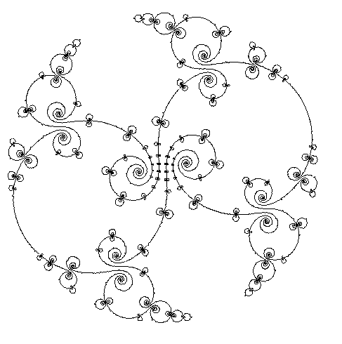

|
 |
CuSPLIB: A Library of Single-Machine Cumulative Scheduling Problems Consider the following optimization problem: we are given n jobs, a time horizon T, and one machine M with processing capacity Cap >= 2. Each job has a processing time (pj), release date (rj), due date (dj), machine utilization (cj), and weight (wj). We would like to schedule all the jobs on machine M while making sure that: (i) all jobs obey their execution window [rj,dj] (to a certain extent; see possible objectives), and (ii) we respect the machine capacity at all times (i.e., given a time 0 <= t <= T, the sum of cj over all jobs running at time t is always less than or equal to Cap). Possible objective functions are: minimize makespan, minimize total (weighted) tardiness, minimize total number of late jobs, minimize total (weighted) delay, etc. (Near cusp
image courtesy of Prof.
Curtis T. McMullen) WHAT'S NEW? CuSPLIB Update Log (modified 06/02/11) |
Our goal is to provide a library of challenging cumulative scheduling problems (CuSPs) that would motivate the study, development, and improvement of optimization algorithms dedicated to solving these problems. We provide a random instance generator, instances created by this generator, and additional instances created by other researchers. (If you'd like to contribute instances to CuSPLIB, send me an e-mail.) The general (raw) format of our instances is:
n T Cap
pj rj dj cj wj
The first line contains the number of jobs (n), time horizon (T), and machine capacity (Cap). That line is followed by n lines formatted as the second line above: processing time (pj), followed by release date (rj), etc. Our instance generator was written in Perl to facilitate execution across platforms. Its usage instructions are printed to the screen as shown below:
geninst.pl:
CuSPLIB Random Instance Generator v1.0
Usage: geninst.pl <m>
<n> <T> <Cap> <cmin> <cmax> <wmin>
<wmax> <pmin> <pmax> <mode>
where:
m
= number of instances to generate (< 1000)
n
= number of jobs
T
= length of time horizon
Cap
= machine capacity
cmin,cmax = job sizes in % of Cap (uniformly
drawn)
wmin,wmax = job windows in % of T (uniformly drawn)
pmin,pmax = job durations in % of their windows (uniformly drawn)
emin,emax = job weights (uniformly drawn)
mode
= type of output (1=ZIMPL, 2=OPL, 3=raw)
Job sizes are uniformly drawn between cmin% and cmax% of Cap; the width of job execution windows are uniformly drawn between wmin% and wmax% of T; job durations are uniformly drawn between pmin% and pmax% of the width of their respective execution windows; and job weights are uniformly drawn between emin and emax. All parameters are integer numbers. The mode parameter indicates the output type: raw is the format described above; ZIMPL mode creates a data file suitable for a model written in the ZIMPL language (click here for a partial ZIMPL code to read the generated data file); similarly, OPL mode creates a data file suitable for a model written in the ILOG OPL language (click here for a partial OPL code to be used with the generated data file).
geninst.pl
(version 1.0)
Author: Tallys
Yunes
Language: Perl
How to use: see instructions given
above
Let me know if you'd like to add your own instance generator to this list (credit will be properly given, of course).
CuSP Instances
Instances generated with geninst.pl will be indentified by their generation parameters and (optionally) by a random generation seed (to allow for replication).
10 50 200 25 0 20 10 40 20 75 1 1:
Data: raw format, ZIMPL format
LP files: min makespan, min delaySolution method: integer programming, time-indexed formulation (see below)
Solver: CPLEX 12.1.0, default behavior
Results: min makespan, min delay
Even with this limited set of instances, we can see that there is a lot of room for improvement: better formulations, cutting planes, better tweaking of CPLEX parameters, other technologies (e.g. constraint programming), etc. The main weakness of the time-indexed formulation is the rapid increase in the number of variables as the time horizon expands. A 200-unit time horizon can be problematic, even with only 50 jobs. The root lower bounds for the makespan objective are very tight, but that doesn't carry over to the minimum delay objective. Recent research by Coban and Hooker (ISMP 2009) shows that a decomposition approach that splits the time horizon into more manageable windows performs significantly better. Nevertheless, many questions still remain unanswered: is the time-indexed formulation hopeless? Can it be made competitive through the addition of cutting planes and/or smarter branching strategies? Do we absolutely need decomposition? Can we invent a better MIP model for this problem? One of the goals of CuSPLIB is to motivate research on these and related topics.Solution method: constraint programming
Solver: Comet 2.0.0, default behavior (using Scheduler and the setTimes search heuristic)
Model files (read raw data files): min makespan, min delay
Results: min makespan, min delay
For the makespan objective, it looks like CP has an easier time than MIP does in this set of instances. Comet found a solution of value 173 to instance 8 within two hours, but did not prove optimality (it also found 13 other feasible solutions with worse objective values). Note that the MIP model above didn't find a single feasible solution to instance 8 within two hours. Perhaps the lack of a good primal heuristic is hurting MIP here? Can we think of an MIP branching scheme that would try to mimic setTimes? Why is instance 8 so much harder than the others? Can we generate some more like it?Solution method: integer programming, time-indexed formulation (see below)For the min delay objective, CP's advantage disappears (as expected, since this objective allows for much less propagation than the makespan). Out of the 10 instances, the MIP model finds the optimal solution to 8 of them within two hours. The CP model only proves optimality in 3 cases. Out of the 2 instances to which neither approach found an optimal solution, MIP wins once (instances 10) and CP wins once (instance 7). Can we find a variable/value selection heuristic that works better than setTimes for the min delay objective and still guarantees that we'll find an optimal solution? How about combining CP and MIP into a hybrid model?
Solver: Gurobi 2.0.0, default behavior
Results: min makespan, min delay
For the makespan objective, Gurobi and CPLEX have a similar performance on 7 of the 10 instances. For instance 3, Gurobi finds the optimal solution in less than a tenth of the time required by CPLEX. On the other hand, Gurobi does not find the optimal solution to instance 4 within two hours, whereas CPLEX does it in under 5 minutes. When it comes to instance 8 (apparently, the toughest), although neither code can find prove optimality within 2 hours, Gurobi finds a feasible solution quickly (6 sec.) and closes the gap down to 0.58% (recall that CPLEX cannot find a feasible solution to this instance within 2 hours).For the min delay objective, performance is also largely similar. Gurobi does not find the optimal solution to instance 4, but CPLEX does. Although neither code finds a provably optimal solution to instance 7, Gurobi's gap after 2 hours (3.41%) is much better than CPLEX's (19.96%).
Can we find more instances that are challenging for both MIP and CP approaches?
More instances to appear. Feel free to contribute some!
Integer Programming Formulations for CuSPs
Time-Indexed Formulation:
One of the most popular formulations of CuSPs discretizes the time horizon into time units:
C++ program using ILOG Concert technology: cumulative.cpp. This program reads data files in the raw format and implements both the min makespan and min delay objectives (selected through a command-line parameter; see source file for details). It is also set up to output the model in .LP format into a file called cumulative.lp.
ZIMPL models: minimize makespan, minimize total weighted delay. These models assume that the data file is called csched.dat. To generate the corresponding LP file (suitable for use with most modern IP solvers), simply run the following command (replacing "model.zpl" by the appropriate file name): zimpl model.zpl.
Event-Based Formulations :
These formulations try to overcome the variable explosion of the time-indexed formulation by using the concept of "events" (e.g. the start and end of a job) and by avoiding time-related subscripts. However, this usually comes at the expense of weaker linear relaxations (more details to come).
Frequently Asked Questions
I don't
like your instance generator. Do you mind if I modify it?
Of
course not! Modifications and improvements are very welcome. Please
send me the modified code so that I can make it available on this
web site. If you have your own instance generator, I hope you'll be
willing to share it with us.
I've
generated some CuSP instances that seem to be pretty tough to solve.
How do I share them with other people?
If
you format your instances according to our raw file format and send
them to me, I'll be happy to add them to CuSPLIB. After all,
that's the whole point of this initiative! Please let me know how
they were generated. If you used an instance generator posted on
this web site, let me know what parameter values were used when
generating the instances (if you can make your instance generator
available, that's even better).
I've
improved some of the results published on CuSPLIB. How do I get
credit for it?
That's
great! If you've found a better feasible solution, please send
me the solution and its objective value. If you've improved a
lower bound, just let me know what the new bound is. In both cases,
it would be great if you could also provide some documentation
explaining the methodology/algorithms used.
How do I
cite CuSPLIB?
You
can use the following BibTeX entry:
@Misc{cusplib,
author
= {T. Yunes},
title = {{CuSPLIB} 1.0: A
Library of Single-Machine Cumulative Scheduling
Problems},
howpublished
= {{\tt http://moya.bus.miami.edu/\raisebox{-0.6ex}{\~{
}}tallys/cusplib/}},
year = {2009},
}
Comments and Feedback
I hope that CuSPLIB can become a useful resource to the academic community. Regardless of whether you're working on Integer Programming, Constraint Programming, heuristic, or hybrid methods for cumulative scheduling, this web site could become a meeting point where we exchange ideas and results with the common goal of advancing the state-of-the-art on CuSPs. Your comments, suggestions and feedback are always welcome. Feel free to drop me a line.
To Appear...
more integer programming models for CuSPs
more CuSP instances
list of references